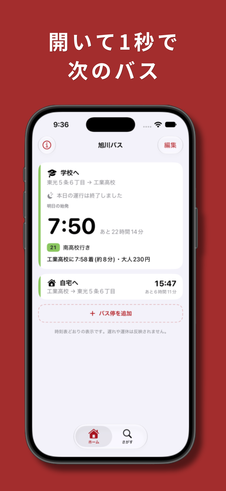
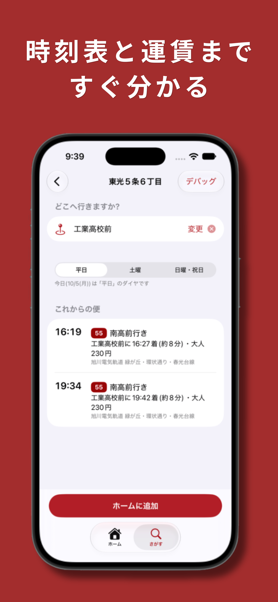
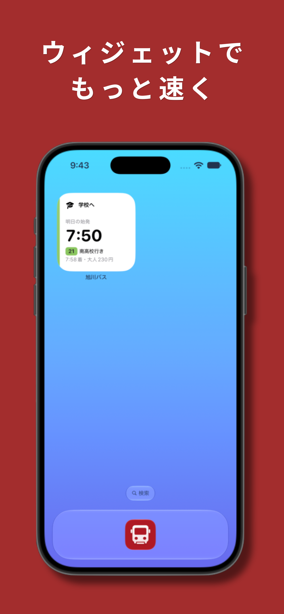

旭川のバスを、もっとかんたんに。
次のバスの時刻や、行きたい場所への直通バスをすばやく調べられます。
毎日の通勤・通学やお出かけに便利な機能をまとめました。
よく乗るルートを登録すると、次のバスの発車時刻や あと何分で来るかをすぐに確認できます。
行きたい施設名やバス停名から、直通で行けるバスを検索。 到着時刻や大人運賃も確認できます。
出発前の通知を設定したり、ホーム画面や ロック画面のウィジェットから時刻を確認できます。
次のバスの確認から、目的地へのバス検索まで。



毎日のバス時刻を、必要なときにすぐ確認。
App Storeで見る →